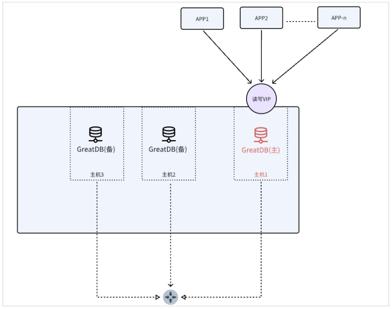

解决方案 | 平滑替代MySQL：万里数据库助力某市考试院报名系统高效国产化迁移
背/景-某市教育考试院报名系统
近日，某市教育考试院考试报名系统顺利完成数据库国产化替代，从MySQL迁移至万里安全数据库GreatDB。该项目不仅成功上线运行，更为各行业推进MySQL数据库国产化替代提供了可复用的实施路径，树立了高效平稳迁移的标杆。
01 背景与挑战：考试报名系统的高要求与MySQL局限
某市教育考试院负责组织全市多项重要教育考试，其中考试报名系统作为各类考试的首要环节，直接关系到成千上万考生的切身利益。该系统需在短时间内承载极高的并发访问压力，尤其在报名高峰期，几分钟内常有数万名考生同时在线操作。
此前，该系统采用MySQL单机架构。随着业务量持续增长及国产化政策推进，原有架构面临三大核心挑战：
01 性能与可靠性不足
在报名高峰期，单机MySQL频繁出现性能瓶颈，系统响应缓慢。同时，单点故障风险高，一旦数据库服务器发生故障，将导致全市报名工作中断。
02 MySQL停服与技术风险
根据Oracle官方信息，MySQL 5.7已于2023年10月停止服务，MySQL 8.0也计划于2026年4月停服。加之近期Oracle大幅裁撤MySQL研发团队，社区支持力度明显减弱，使得系统面临不可控的技术与供应链风险。
03 国产化改造的顾虑
尽管国家信创战略要求关键系统实现国产化，但考试院担忧迁移过程中需对现有应用进行大规模改造，带来高昂成本与不确定风险。
02 核心痛点：如何破解数据库迁移中的“改造难题”？
在数据库国产化替代过程中，许多使用MySQL的单位面临相似困境，如选择某些需要深度改造的国产数据库，将面临以下难题：
SQL语法存在差异，应用程序需大量适配；
数据类型定义不一致，需重新映射与转换；
存储过程、函数等数据库对象需重写与测试；
应用层代码中数据库连接、事务处理逻辑也需调整。
对于业务系统复杂、数据高度敏感的考试院而言，大规模改造不仅成本高昂，更伴随不可预知的技术与业务风险。
03 万里解决方案 高度兼容MySQL，平滑迁移
万里安全数据库GreatDB凭借对MySQL协议的高度兼容，成为客户实现平滑迁移的理想选择，极大降低了改造难度与项目风险。
1、100% 兼容MySQL
支持MySQL标准SQL语法、系统函数及数据类型，现有应用几乎无需修改即可无缝接入；
2、专业的迁移工具支持
通过自研数据迁移工具GreatDTS，实现从MySQL到万里数据库的快速、不停机迁移，保障数据完整性与一致性；
3、全流程技术服务
由经验丰富的技术团队提供从评估、规划到上线及优化的端到端服务，确保迁移过程顺利可控。
考试院技术负责人对此表示：“选择万里数据库，最关键的因素在于其对MySQL协议的高度兼容。这意味着我们无需对现有系统做大范围改造，极大降低了迁移成本与实施风险。”
04 架构升级 从单机MySQL到高可用集群
除了实现平滑迁移，万里数据库还助力考试院完成了系统架构的重要演进——从原有的MySQL单机架构升级为“1主2备”高可用集群。
原架构痛点 | 新架构优势 |
| 单点故障风险高，系统可用性低 | 主备自动切换，实现业务高可用 |
| 高峰期性能瓶颈显著 | 支持读写分离，系统整体性能大幅提升 |
| 备份恢复效率低，影响业务连续性 | 多副本机制保障数据安全，恢复迅速便捷 |
| 运维依赖手工，效率低下 | 图形化管理工具赋能运维，提升管理效率 |

万里数据库GreatDB 1主2备架构图
05 项目成效：平稳迁移 系统性能与可靠性全面提升
在万里数据库专业团队的支持下，考试院报名系统顺利完成迁移，并取得以下显著成果：
1、迁移过程平稳高效
借助GreatDTS迁移工具，在业务低峰期完成数据同步与切换，对现有业务影响极小；
2、系统性能大幅提升
新架构下系统响应速度提升超过30%，高峰期卡顿问题得到根本解决；
3、运维效率显著提高
图形化管控平台简化了数据库监控与维护流程，DBA工作效率大幅提升；
4、数据安全可靠保障
多副本机制有效防止数据丢失，即使单节点故障也可快速恢复，系统具备“准无人值守”高可用能力。
考试院相关负责人评价道：“迁移后最直观的感受是运维压力显著减轻。以往高峰期需专人值守，现在系统运行稳定，异常自动切换，真正实现了高可用目标。”
06 万里数据库 MySQL国产化替代的理想路径
该项目的成功实施，为各行业推进MySQL国产化替代提供了重要参考：
1、兼容性是关键
选择与MySQL高度兼容的国产数据库，可显著降低迁移成本与风险；
2、架构升级是机遇
将国产化替代视为系统架构优化的契机，实现从单机到高可用集群的跨越；
3、专业服务是保障
选择具备丰富迁移经验和技术实力的数据库厂商，是项目成功的重要保障。
万里数据库技术负责人总结道：“我们深入理解用户在国产化替代中的顾虑与需求。通过100%兼容MySQL协议，帮助用户以最小代价实现平滑迁移，同时享受高可用架构带来的可靠性提升与性能跃升。该案例充分证明，万里安全数据库GreatDB是MySQL国产化替代的理想选择。”
END
随着国家信息技术应用创新战略的深入推进，越来越多的单位和核心系统将面临数据库国产化替代的任务。万里数据库依托在此项目中积累的成功经验，将持续为各行业提供安全、可控、高效的数据库产品与解决方案，助力中国数字化转型行稳致远。
未来，万里数据库将继续加强技术研发与服务能力建设，为更多行业的国产化替代与系统升级提供坚实支撑，推动国家信创战略全面落地。